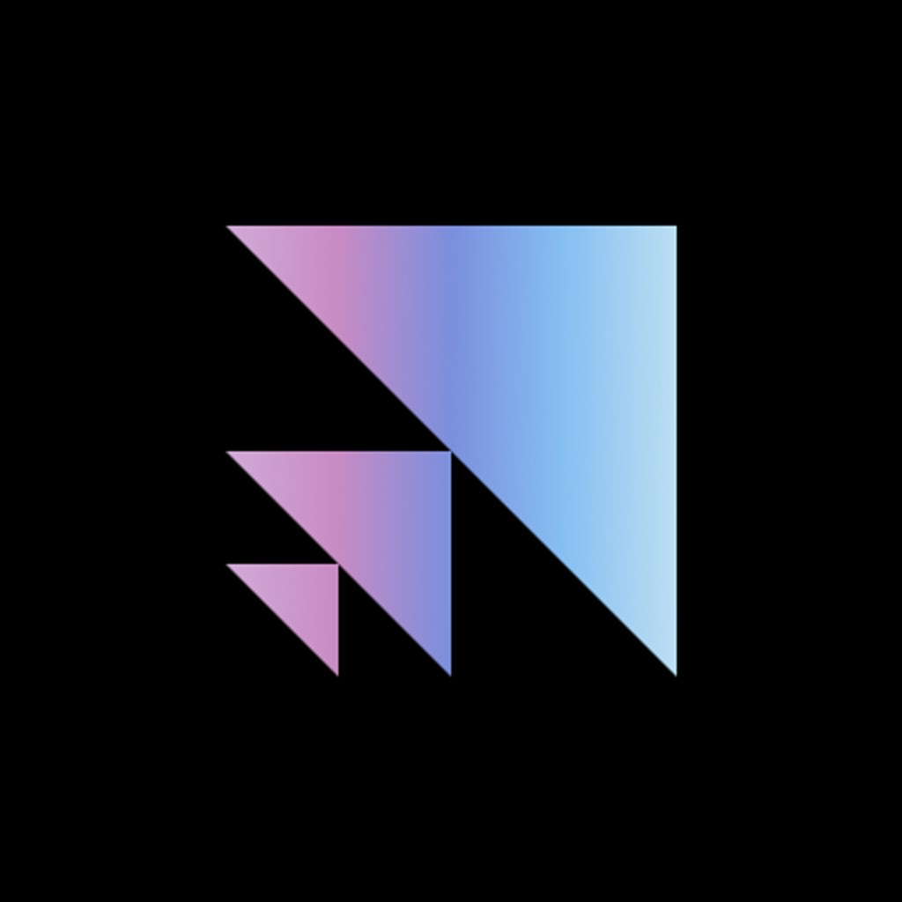

Competition
Spring 2026
Fine-Tuning Qwen-4B for Math Reasoning
CSE 151B, UC San Diego
Hi there! I'm an incoming MS in Computer Science student at Columbia University and a recent Computer Science and Mathematics graduate from UC San Diego. I build AI systems for real-world settings, spanning physical and embodied AI, agents, evaluation, multimodal learning, simulation, and safety-critical applications.

I've worked across AI research, applied machine learning, and production engineering at Scale AI, Articul8 AI, and MIT Lincoln Laboratory. My work has spanned LLM evaluation and alignment, production GenAI agents for enterprise automation, adversarial robustness for diffusion models, RAG based speech text generation for a military radio communication digital twin, and SocialCipher, a multimodal threat detection framework presented at IEEE CAI.
I've also worked on AI systems for immersive interaction and scientific modeling. At the Qualcomm Institute, I built an LLM powered NPC dialogue system for interactive environments, connecting real time language generation with Unreal Engine. In the Toor Lab at UCSD, I worked on 3D RNA structure reconstruction using NVIDIA GET3D.
Outside of AI research, I care about building technology that creates meaningful real world impact. As a developer and product manager at Triton Software Engineering, I helped build pro bono software for nonprofits supporting formerly incarcerated individuals, logistics workflows for farmers, and youth sports organizations.
My current interests include physical and embodied AI, AI agents, LLM evaluation and alignment, multimodal learning, model robustness, and AI safety/cybersecurity.
Hobbies: I like to play and teach guitar, play basketball, go to the gym, practice karate, and spend time outdoors hiking.
Machine Learning, Natural Language Processing, Generative AI & Agents, Computer Vision, Deep Reinforcement Learning, Multimodal AI, RAG & Information Retrieval, AI Safety & Cybersecurity, Full-Stack Development, & Human-Computer Interaction.

MS in Computer Science (Incoming, Fall 2026)

BS in Computer Science & Mathematics
